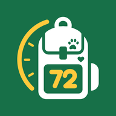

Politique de confidentialité
Qui sommes-nous ?
Mes72h est une application gratuite d’aide à la préparation aux situations d’urgence (réserve d’eau et de nourriture, sacs d’évacuation, plan familial). Elle est éditée à titre personnel par un développeur indépendant, sans but commercial.
Contact : contact.mes72h@gmail.com
Les données que vous saisissez
Le foyer (prénoms, catégories d’âge, animaux de compagnie, allergies éventuelles), la réserve, les sacs, la boîte à pharmacie et le plan familial sont enregistrés uniquement dans la mémoire de votre téléphone. L’éditeur de Mes72h n’y a jamais accès : il n’existe aucun serveur Mes72h.
La boîte à pharmacie appartient au foyer : aucun médicament n’est relié à une personne. Les rappels de date affichés sur l’écran du téléphone ne montrent pas le nom des médicaments.
Les services contactés par l’application
Pour vous donner l’information que vous demandez, l’application interroge les services publics ou associatifs suivants. Ils ne reçoivent ni nom, ni information sur votre foyer.
| Service | Ce qui est envoyé | Quand |
|---|---|---|
| Open Food Facts et ses bases sœurs (association à but non lucratif) | Le code-barres du produit | Quand vous scannez un produit alimentaire |
| IGN — Géoplateforme (service public) | L’adresse saisie, ou vos coordonnées arrondies à environ 100 m si vous utilisez « Ma position » | Quand vous cherchez les risques de votre commune |
| Géorisques (service public) | Le code de votre commune | Même moment |
Comme pour toute connexion à internet, ces services voient l’adresse IP de votre téléphone, selon leurs propres règles de confidentialité.
La liste des médicaments (Base de données publique des médicaments, ministère de la Santé) est intégrée à l’application : la recherche du nom d’un médicament se fait sur le téléphone, sans connexion.
Autorisations demandées
- Appareil photo : pour scanner les codes-barres et le QR code de sauvegarde. Le scanner, fourni par Android, fonctionne sur le téléphone ; aucune image n’est envoyée.
- Position (facultative) : pour « Ma position » (risques de la commune, boussole et coordonnées GPS à communiquer aux secours). Pour la boussole et la position à communiquer aux secours, la position reste sur le téléphone. Pour trouver votre commune, seules des coordonnées arrondies à environ 100 m sont envoyées à l’IGN. La position n’est jamais enregistrée.
- Notifications : pour les rappels de dates de péremption, programmés sur le téléphone.
Sauvegarde et partage
Le texte et le QR code de sauvegarde, ainsi que le message d’invitation d’un proche, sont créés sur votre téléphone. Ils contiennent les données de votre foyer et ne sont transmis qu’aux personnes que vous choisissez, par le moyen que vous choisissez. Ne les donnez jamais à une personne extérieure à votre foyer.
Si la sauvegarde Android de votre téléphone est activée, Android peut copier les données de l’application dans votre compte Google, de façon chiffrée, pour les restaurer sur un nouveau téléphone. Ce service est géré par Google ; Mes72h n’y a pas accès.
Durée de conservation et suppression
Les données restent sur votre téléphone tant que vous les gardez. Vous pouvez tout effacer à tout moment depuis les réglages de l’application, ou en la désinstallant.
Vos droits
Comme l’éditeur ne détient aucune donnée vous concernant, il n’a rien à consulter, corriger ou supprimer. Pour toute question : contact.mes72h@gmail.com. Vous pouvez aussi saisir la CNIL (cnil.fr).
Enfants
Mes72h s’adresse aux adultes responsables d’un foyer. Elle ne collecte aucune donnée, y compris sur les enfants dont un parent saisit le prénom.
Modifications
Toute modification de cette politique sera publiée sur cette page, avec sa date de mise à jour.